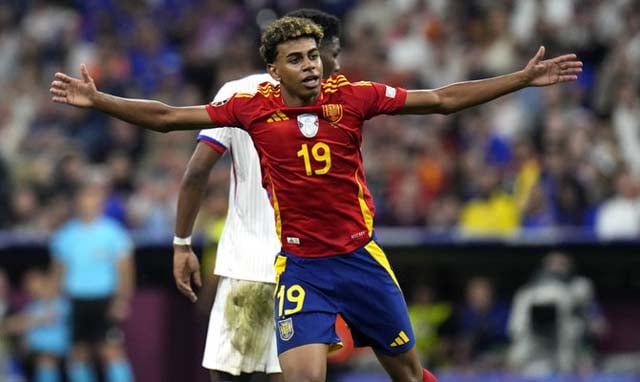

Yamal makes history as Spain sink France to reach Euro 2024 final

Published: November 23,2024
Lamine Yamal, 16, became the tournament's youngest ever goalscorer as Spain came back to beat France 2-1 in Munich on Tuesday and reach the Euro 2024 final.
Trailing after Randal Kolo Muani headed in a Kylian Mbappe cross in the ninth minute, Spain turned the match around in a four-minute period, scoring twice against a side who had only conceded once in five previous games in this tournament.
Yamal, who turns 17 a day before Sunday's final against either the Netherlands or England, equalised with a superb strike from outside the box, curling a long-range effort into the top corner and past the fingertips of an airborne Mike Maignan.
Spain took the lead on 25 minutes, Dani Olmo expertly gathering a loose ball and firing a low shot into the net with the aid of a deflection off Jules Kounde.
"I got the ball, didn't think about it for too long and just shot," Yamal said of his brilliant strike. "I'm just enjoying myself and I'm proud to be in the final."
Three-time champions Spain became the first team to win six games at a Euros and are one game away from a record-breaking fourth crown.
"We are one step away from glory," Olmo told ZDF. "We are very, very close. This team is unbelievable. We deserve it."
This weekend in Berlin will be Spain's first appearance in a major tournament final since a much-vaunted side thrashed Italy 4-0 in the Euro 2012 showpiece.